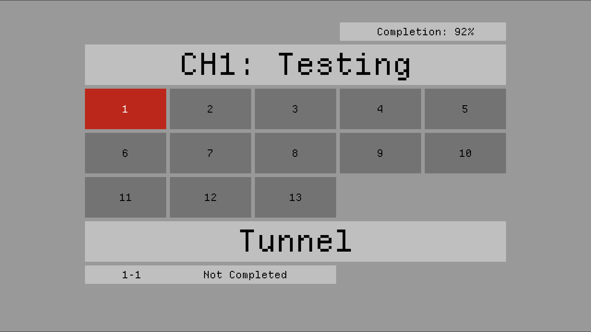
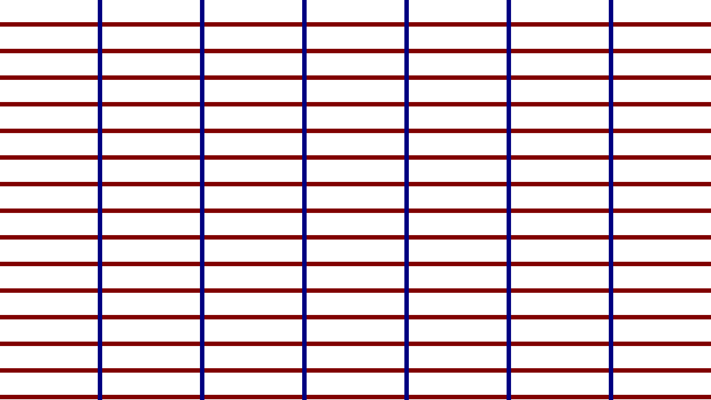
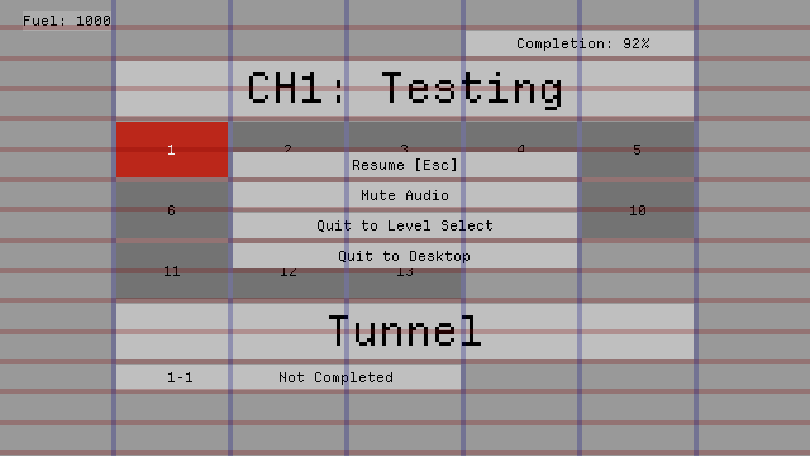
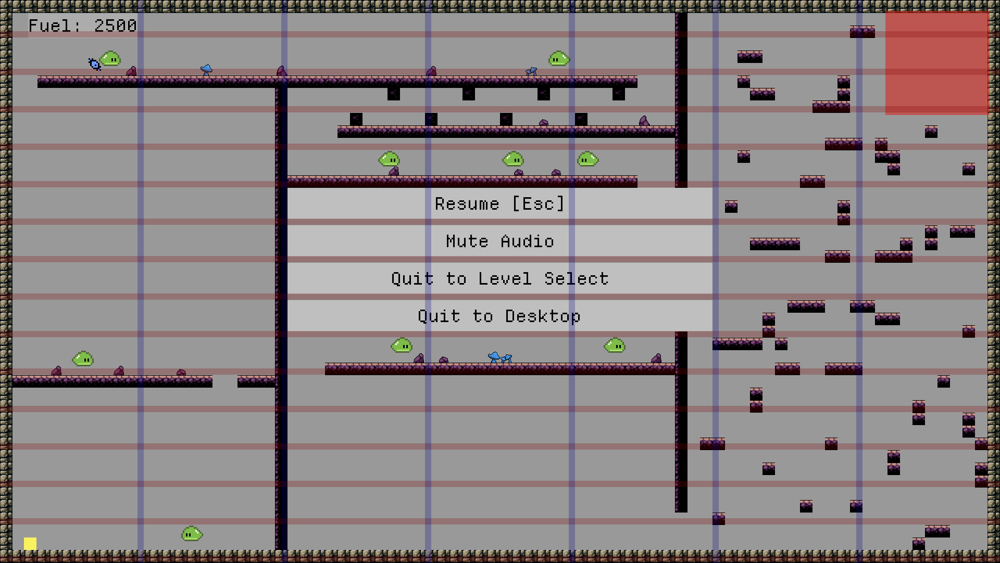

New Level Select Layout

new functionality:
- save data is updated when a player beats a level
- level select UI:
- levels now respond to clicks and controller input, similar to pause
menu
- level completion percentage displayed on top right panel
- level ID displayed on bottom left panel
- individual level completion information displayed on bottom
panel
- completed levels styled in a darker tone for visual distinction
- TODO: update screenshot to show differences in completed and
non-completed
UI layout updates:
- pause menu
- extended horizontally to fit in the middle three columns of the UI
grid
- given row gutters to match level select screen button UI
- fuel label
- increased background transparency to 50%
- the right edge of the fuel label is aligned to the edge of the first
column of the UI grid
- the fuel label is slightly lower than other UI elements on the grid
so it doesn’t clash with the border of the level
- level select screen
- level buttons are now actual buttons, like the pause menu.
Resource Management:
- renamed assets to describe their intended use in greater detail
UI Grid

all UI elements are designed to fit to a base grid
base grid stats:
Unit: pixels:
- column width: 264px
- column gutter (blue): 12px
- row height: 60px
- row gutter (red): 12px
Unit: 24px tiles:
- column width: 11 tiles
- column gutter (blue): 0.5 tiles
- row height: 2.5 tiles
- row gutter (red): 0.5 tiles
- 7 columns + 6 column gutters fit on a 1920x1080 screen
- 1920px = (7 * 264px) + (6 * 12px)
- 1920px = (7 * 276px) - 12px
- 15 rows + 15 row gutters fit on a 1920x1080 screen
- 1080px = (15 * 60px) + (15 * 12px)
- 1080px = (15 * 72px)
- row height: 2.5 25px tiles
- row gutter: 0.5 24px tiles (red)
Images
UI Grid overlaid on
Level Select Screen
UI Grid overlaid over all
UI elements

UI Grid overlaid
over paused full-screen level
